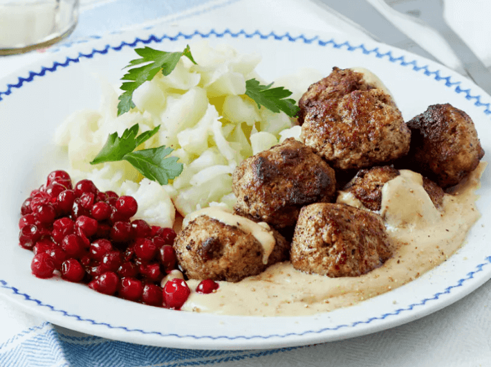

Köttbullar
(30 Min., 4 Port., F: 66 g, K: 9 g, E: 31 g)

Zutaten
Für die Fleischbällchen:
- ½ Zwiebel, 450 g Hackfleisch, 110 g Frischkäse, 1 Ei, 1 Prise Piment, 3 TL Butter, Salz & Pfeffer
Für die Sahnesauce:
- 300 ml Schlagsahne, 50 g Frischkäse, Salz & Pfeffer
Für das Blumenkohlpüree:
- 450 g Blumenkohl, 4 TL Preiselbeeren
Zubereitung der Fleischbällchen
- Zwiebel fein hacken und in einer Schüssel mit dem Hackfleisch vermischen. Die weiteren Zutaten dazugeben und gut umrühren.
- Hände anfeuchten und Gemisch in 3 cm große Bällchen formen.
- Butter in eine Pfanne geben, Fleischbällchen anbraten, dann herausnehmen.
Zubereitung der Sahnesauce
- Schlagsahne, Frischkäse und verbleibende Flüssigkeit in der Pfanne erhitzen.
- Die Hitze etwas absenken und köcheln lassen bis die gewünschte Konsistenz erreicht ist. Nach Belieben abschmecken.
Zubereitung der Beilage
- Blumenkohl in kleine Röschen schneiden und in Wasser aufkochen. Wasser abschütten und den Blumenkohl mit einer Gabel leicht zerdrücken.
- Die Preisselbeeren in etwas Wasser erhitzen und ca. 10 Minuten köcheln lassen. Preisselbeeren vom Herd nehmen, mit einer Gabel leicht zerdrücken.
Originalrezept unter: Dietdoctor.com